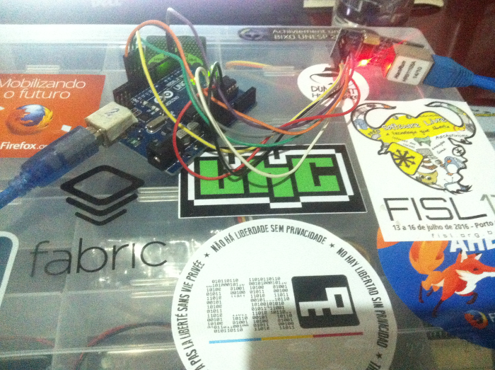

Há muito tempo comprei um módulo Ethernet ENC28J60 e apenas recentemente tive um tempo livre para testá-lo. Anteriormente, todas as comunicações com servidores eram feitas por serial e usava uma biblioteca ótima em Java e em Python é tão simples que dispensa comentários (nenhuma novidade).
Curiosidade off topic: A biblioteca para Java que utilizei foi desenvolvida pelo pessoal do Panama Hitek, isso em 2014 e eu conversei brevemente com eles por e-mail na época. Eis que esse ano por coincidência descobri que são todos colaboradores do Fedora também e esse mundo é realmente pequeno.
Twitter API
Antes de tudo, registre aqui o seu app no Twitter para poder utilizar a API. Não se esqueça de gerar o Token para poder postar tweets na sua conta, vá em "Keys and Access Tokens" > "Create my access token"
UIPEthernet
É provável que use as bibliotecas etherShield e ETHER_28J60, as quais são específicas para esse módulo e existem muitos tutoriais. Porém existe uma muito mais legal (seriously) chamada UIPEthernet, ela é compatível com a famosa Ethernet, ou seja, qualquer exemplo que usa a Ethernet (File > Examples > Ethernet) pode ser executado apenas substituindo a importação:
#include <SPI.h>
#include <Ethernet.h> //Apenas substituir por UIPEthernet.h
O download pode ser feito aqui ou apenas:
$ cd ~/Arduino/libraries/
$ git clone https://github.com/ntruchsess/arduino_uip UIPEthernet
Possíveis soluções
Hard way
Você pode simplesmente criar sua própria biblioteca em C e enviar as requisições HTTPs para a API do Twitter, para consolar existe a "Tweet Library for Arduino" a qual está apenas defasada e não funciona nas versões mais recentes como Arduino IDE 1.6.4
Easy way
Convenhamos que manipular ponteiros e enviar requisições com C pode não ser tão agradável, optei por um pequeno script em Python.
O processo basicamente é: o Arduino apenas manda o conteúdo para o script e este que lida com a Twitter API.
Se você nunca usou Python, é necessário baixar o Flask e Twython:
$ sudo pip install flask
$ sudo pip install twython
Crie um arquivo chamado apiConfig, é nele que você vai inserir todas as chaves de acesso que o Twitter gerou para você
APP_KEY = 'your_APIKey'
APP_SECRET = 'your_APISecret'
OAUTH_TOKEN = 'your_accessToken'
OAUTH_TOKEN_SECRET = 'your_tokenSecret'
Na mesma pasta, crie um script chamado tweet.py
from twython import Twython
from flask import Flask
import apiConfig
app = Flask(__name__)
APP_KEY = apiConfig.APP_KEY
APP_SECRET = apiConfig.APP_SECRET
OAUTH_TOKEN = apiConfig.OAUTH_TOKEN
OAUTH_TOKEN_SECRET = apiConfig.OAUTH_TOKEN_SECRET
twitter = Twython(APP_KEY, APP_SECRET, OAUTH_TOKEN, OAUTH_TOKEN_SECRET)
@app.route("/")
def index():
return "Hello world"
@app.route("/sendTweet/<message>")
def sendTweet(message):
twitter.update_status(status=message);
return "Done."
if __name__ == '__main__':
#Fix here
app.run(host="your_ip", port=8080, debug=True)
Obviamente que o script pode ser mil vezes melhor, numa API sempre retorne o código HTTP correto e trate as exceções ao menos.
Destaque para o sticker do FISL deste ano \o/

O código do Arduino é bem simples, é uma alteração do exemplo. Lembre-se de alterar o IP do Arduino caso esteja sendo utilizado e de inserir o IP do server.
#include <SPI.h>
#include <UIPEthernet.h>
byte mac[] = {0xDE, 0xAD, 0xBE, 0xEF, 0xFE, 0xED};
char server[] = "ip_server"; //fix here
IPAddress ip(192, 168, 1, 177);
EthernetClient client;
void setup() {
Serial.begin(9600);
if (Ethernet.begin(mac) == 0) {
Serial.println("Failed to configure Ethernet using DHCP");
Ethernet.begin(mac, ip);
}
}
void loop() {
if (client.connect(server, 8080)) {
Serial.println("connected");
// Make a HTTP request:
client.println("GET /sendTweet/Hello%20world%20by%20Arduino HTTP/1.1");
client.println("Host: ipServer_withPort"); //fix here
client.println("Connection: close");
client.println();
client.stop();
} else {
Serial.println("connection failed");
}
delay(5000);
}
Vamos dar algumas permissões para o script, suba o Flask e faça upload do código no Arduino.
$ chmod a+x tweet.py
$ python tweet.py
E finalmente..
Hello world by Arduino
— Daniela Morais (@danielammorais) July 17, 2016
Algumas observações
Por enquanto, eu não consegui fazer requisições para servidores locais e nem ao menos conectava (ip's 192.168.x.x e localhost). O servidor que hospedou esse script não suportava https e em alguns momentos um erro sobre isso é retornado.
Além disso, o Twitter não permite que seja postado sempre o mesmo conteúdo (obviamente) então um erro será retornado se não houver nenhum delay longo ou variação do conteúdo.
Lembre-se de tomar cuidado com caracteres, use sempre o URL Encoder/Decoder. Se nada der certo, use o bom e velho curl ou wget para testar.
And other cool things..
WebServer with Arduino
https://www.arduino.cc/en/Tutorial/WebServer
Acendendo um LED via Internet com Arduino e o Ethernet Shield
https://br.renatocandido.org/2013/09/acendendo-um-led-via-internet-com-arduino-e-o-ethernet-shield/
Tweetduino
https://github.com/danielamorais/tweetduino.git
Referências
Arduino Ethernet – Pushing data to a (PHP) server
http://www.tweaking4all.com/hardware/arduino/arduino-ethernet-data-push/